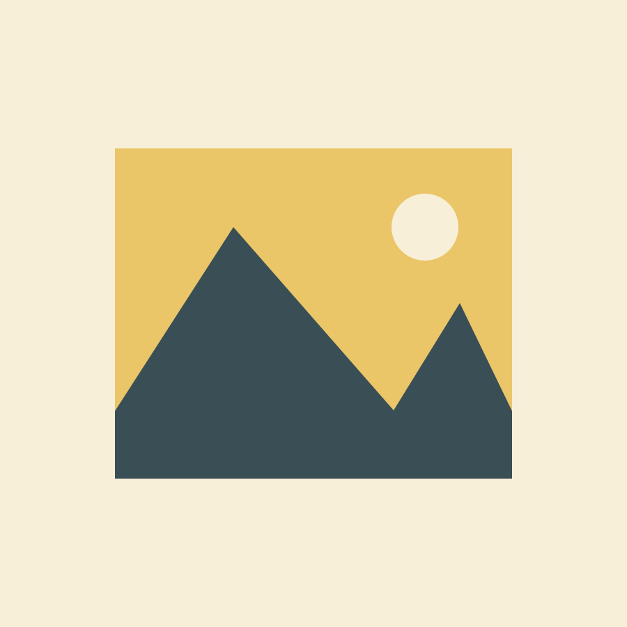
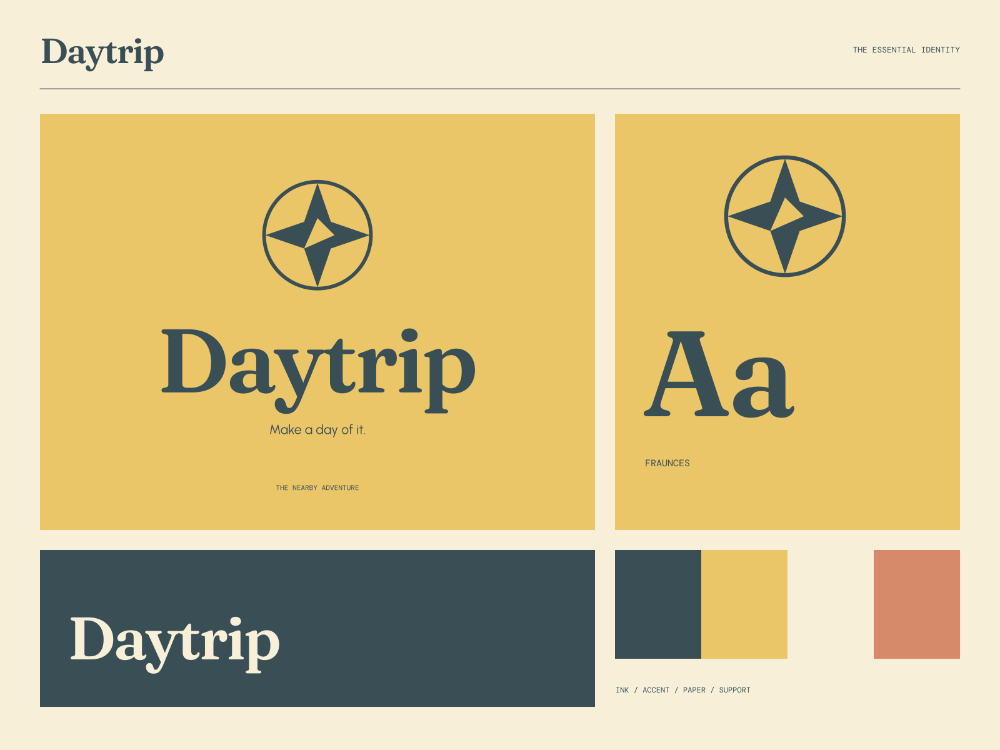

01
Start nearby
Thoughtful guides to the places just beyond the usual route.
NEARBY ADVENTURES / A GOOD WAY TO GO
Make a day of it. A new view, not so far away.

A coherent little world
A new view, not so far away. Make a day of it.
01
Thoughtful guides to the places just beyond the usual route.
02
A more curious way to make a day feel different.
03
Useful details and small observations worth bringing along.

The point of view
Mid-century map postcards, compass-cut sun shapes, warm destination tickets, and generously curved serif type. A familiar place becomes a fresh little journey.